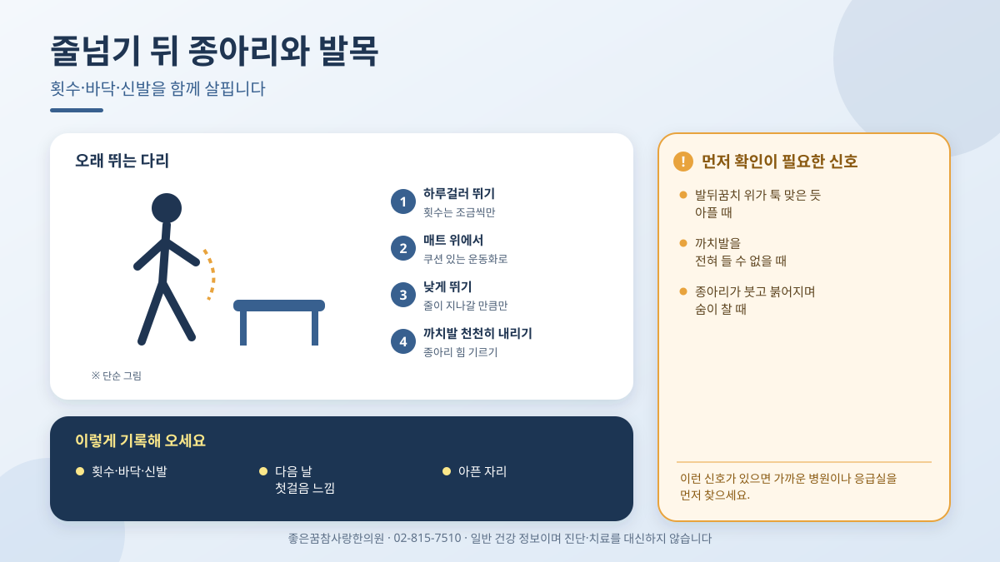

이종호 한의사 감수좋은꿈참사랑한의원 대표원장 (한의사 면허번호 19769)발행 2026-11-26 · 수정 2026-11-26
이 글의 차례
아파트 단지 놀이터 옆, 저녁을 먹고 나와 줄넘기를 돌립니다. 처음에는 백 번도 숨이 차더니 며칠 만에 오백 번, 천 번까지 늘었습니다. 몸이 가벼워지는 것 같아 뿌듯했는데, 어느 날 아침 침대에서 내려와 첫발을 디디는 순간 종아리가 돌처럼 굳어 있고 발뒤꿈치 위가 찌릿합니다.
줄넘기는 줄 하나만 있으면 어디서든 할 수 있어서 다이어트를 결심하신 분들이 가장 먼저 시작하는 운동 가운데 하나입니다. 짧은 시간에 땀이 나고 숨이 차서 운동한 보람도 큽니다. 그만큼 시작하고 한두 주 만에 종아리와 발목 불편을 안고 오시는 분도 많습니다.
줄넘기는 한 번 뛸 때마다 몸무게의 몇 배에 이르는 힘이 발과 종아리로 전해집니다. 천 번을 뛰면 그 힘을 천 번 받는 셈입니다. 근육은 금방 적응하는 것 같아도, 아킬레스건과 정강이뼈, 발바닥 근막은 그 속도를 따라가는 데 시간이 걸립니다.
저는 이런 분들께 "하루에 몇 번, 어디서, 어떤 신발을 신고 뛰시는지"를 먼저 여쭙니다. 같은 천 번이라도 시멘트 바닥에서 맨발에 가까운 운동화로 뛰는 것과, 매트 위에서 쿠션 있는 신발로 뛰는 것은 다리에 남기는 부담이 다릅니다.
줄넘기 뒤 다리 통증은 어떤 것들이 있나요?
가장 흔한 것은 종아리 근육이 뭉치고 쑤시는 근육통입니다. 줄넘기는 발끝으로 착지하고 다시 튀어 오르는 동작이라 종아리 근육이 쉬지 않고 일합니다. 시작한 다음 날이나 그다음 날 종아리가 단단해지고 계단 내려가기가 힘들어지는 것이 대표적입니다.
발뒤꿈치 위 아킬레스건이 뻣뻣하고 시큰한 경우도 많습니다. 아침에 일어나 처음 몇 걸음이 특히 뻣뻣하고, 움직이면 조금 풀리다가 다시 뛰면 아파집니다. 힘줄이 갑자기 늘어난 부담에 지친 상태로, 계속 무리하면 오래가기 쉽습니다.
정강이 안쪽을 따라 욱신거리는 신스플린트, 발바닥 뒤꿈치 쪽이 아침마다 찌릿한 족저근막 통증, 발목 앞쪽이 끼이듯 아픈 경우도 줄넘기에서 자주 봅니다. 아픈 자리가 어디인지에 따라 살펴볼 곳과 쉬어 갈 방법이 달라집니다.
왜 줄넘기는 종아리와 발목에 부담이 클까요
줄넘기는 발뒤꿈치를 땅에 대지 않고 앞꿈치로만 착지하는 동작이 반복됩니다. 이때 착지의 충격을 흡수하고 다시 튀어 오르는 일을 거의 종아리 근육과 아킬레스건이 맡습니다. 걷기나 달리기보다 종아리에 집중되는 운동이라 할 수 있습니다.
횟수를 너무 빨리 늘리는 것이 가장 큰 이유입니다. 숨이 덜 차고 몸이 익숙해지면 하루가 다르게 횟수를 늘리고 싶어집니다. 그런데 근육과 심폐 기능은 빨리 적응해도, 힘줄과 뼈는 몇 주에 걸쳐 천천히 단단해집니다. 그 틈에서 통증이 시작되기 쉽습니다.
바닥과 신발도 큰 영향을 줍니다. 시멘트나 아스팔트 같은 딱딱한 바닥은 충격을 거의 흡수하지 못하고, 밑창이 얇은 신발이나 슬리퍼, 맨발에 가까운 상태로 뛰면 그 충격이 고스란히 다리로 올라옵니다.
몸무게와 식사도 함께 봅니다. 체중 관리를 위해 줄넘기를 시작하신 분은 몸무게가 많이 나가는 상태에서 착지 충격을 더 크게 받고, 동시에 식사량을 크게 줄이고 계신 경우가 많습니다. 덜 먹고 많이 뛰면 근육과 뼈가 회복할 재료가 부족해집니다.
근육통, 아킬레스건 통증, 정강이 통증은 어떻게 다른가요
종아리 근육통은 근육 전체가 넓게 쑤시고, 다친 순간이 없습니다. 움직이기 시작할 때 뻣뻣하다가 몸이 데워지면 조금 덜해지고, 대개 이삼일 사이에 가라앉습니다. 이 경우는 가볍게 걷고 몸을 따뜻하게 하는 것이 회복에 도움이 될 수 있습니다.
아킬레스건 통증은 발뒤꿈치 위 힘줄 자리가 콕 아프고, 아침 첫걸음이 유난히 뻣뻣합니다. 힘줄을 손가락으로 잡아 보면 반대쪽보다 굵거나 부어 있는 느낌이 들기도 합니다. 뛰는 동안 덜하다가 끝나고 나서 더 아파지는 흐름이 흔합니다.
정강이 통증은 정강이뼈 안쪽 가장자리를 따라 넓게 욱신거리면 신스플린트를, 뼈의 한 점을 눌렀을 때 콕 아프고 쉬어도 가라앉지 않으면 피로골절을 생각합니다. 한 점이 아픈 경우는 뛰기를 멈추고 검사를 먼저 받아 보시는 것이 좋습니다.
스스로 먼저 살펴볼 수 있는 것
벽을 잡고 한 발로 까치발 들기를 천천히 해 보세요. 양쪽 횟수가 비슷한지, 한쪽만 금방 지치거나 아킬레스건이 찌릿한지 봅니다. 아픈 쪽이 확연히 약하다면 종아리와 힘줄이 지쳐 있는 것입니다.
정강이뼈 안쪽 가장자리를 따라 손가락으로 위에서 아래로 눌러 보세요. 넓게 뻐근한지, 한 점이 콕 아픈지가 구분됩니다. 아킬레스건도 엄지와 검지로 가볍게 잡아 보며 양쪽 굵기와 아픈 정도를 비교합니다.
아침에 일어나 처음 열 걸음의 느낌을 적어 두세요. 줄넘기를 한 다음 날과 쉰 다음 날의 첫걸음을 비교하면, 지금 다리가 감당할 수 있는 양을 가늠하는 데 큰 도움이 됩니다.
먼저 이렇게 여쭙니다
- 줄넘기를 시작하신 지 얼마나 되셨고, 하루에 몇 번 뛰시나요?
- 횟수를 얼마나 빠르게 늘리셨나요?
- 어떤 바닥(시멘트, 아스팔트, 마루, 매트)에서 뛰시나요?
- 어떤 신발을 신고 뛰시나요? 밑창은 얼마나 닳았나요?
- 아침 첫걸음이 뻣뻣하거나 발뒤꿈치가 찌릿한가요?
- 체중 관리를 위해 식사량을 줄이고 계신가요?
예전에 발목을 자주 접질렸거나 평발, 아치가 높은 발이라는 말을 들으셨다면 함께 알려 주세요. 발 모양에 따라 착지할 때 힘이 실리는 자리가 달라져 아픈 곳도 달라집니다. 줄넘기할 때 신는 운동화를 가져와 주시면 밑창이 닳은 모양도 함께 살펴봅니다.
일상에서 먼저 해 볼 수 있는 것
통증이 시작됐다면 횟수를 확 줄이고 쉬는 날을 넣어 주세요. 근육통 정도라면 하루 이틀 쉬었다 절반 횟수로 돌아가 보고, 아킬레스건이나 정강이가 콕 아프다면 통증이 가라앉을 때까지 뛰는 운동은 잠시 내려놓는 것이 좋습니다.
- 하루 횟수는 일주일에 조금씩만, 연이틀보다 하루걸러 뛰기
- 시멘트 대신 매트나 마루, 운동장 흙바닥에서 뛰기
- 쿠션 있는 운동화 신기, 슬리퍼나 맨발로 뛰지 않기
- 높이 뛰지 말고 줄이 지나갈 만큼만 낮게 뛰기
- 뛰기 전 발목 돌리기와 종아리 늘리기로 5분 이상 데우기
- 뛴 뒤 벽을 밀며 종아리와 아킬레스건 천천히 늘리기
줄넘기는 높이 뛸수록 착지 충격이 커집니다. 줄이 발밑을 지나갈 만큼만 낮게, 무릎을 살짝 굽힌 채 부드럽게 착지하는 연습을 해 보세요. 착지할 때 '쿵' 소리가 덜 날수록 다리에 남는 부담도 줄어듭니다.
한 번에 길게 뛰기보다 짧게 나눠 뛰는 방법도 좋습니다. 1분 뛰고 1분 쉬기를 몇 번 반복하면 같은 시간을 운동하면서도 종아리가 쉴 틈이 생깁니다. 숨이 차는 운동 효과는 그대로 가져가면서 다리 부담만 덜어 내는 방법입니다.
종아리가 쉬는 동안에는 실내 자전거나 수영, 빠르게 걷기처럼 충격이 적은 운동으로 체력을 이어 가세요. 체중 관리 중이시라면 뛰는 운동만 고집하기보다 다리에 덜 부담되는 운동을 섞는 편이 오래갑니다.
식사도 함께 챙겨 주세요. 운동량을 늘리면서 끼니를 크게 줄이면 근육과 힘줄이 회복할 재료가 부족해집니다. 단백질 반찬과 채소를 끼니마다 조금씩 챙기고, 물도 넉넉히 드시는 것이 다리 회복에 도움이 됩니다.
다시 횟수를 늘릴 때는 어떻게 하나요
아프지 않게 뛸 수 있는 횟수가 생기면 일주일에 한 번 정도, 그 횟수를 조금씩만 늘려 갑니다. 늘린 다음 날 아침 첫걸음과 종아리 상태를 보고 그다음 걸음을 정하시면 됩니다. 아침에 뻣뻣함이 남지 않을 만큼이 지금 다리가 감당할 수 있는 양입니다.
까치발 들기와 천천히 내리기 같은 종아리 근력 운동을 함께 하시면 아킬레스건이 새로운 부담에 적응하는 데 도움이 됩니다. 계단 끝에 앞꿈치로 서서 발뒤꿈치를 천천히 내렸다 올리는 동작을 아프지 않은 범위에서 해 보세요. 내리는 동작을 천천히 할수록 힘줄에 도움이 됩니다.
줄넘기를 하시는 분들이 자주 헷갈리는 것
첫째, 아파도 뛰다 보면 근육이 붙어서 괜찮아진다는 생각입니다. 근육통은 그럴 수 있지만, 아킬레스건이나 정강이뼈의 통증은 참고 뛸수록 오래갑니다. 아픈 자리가 넓은지, 한 점인지를 먼저 나눠 보세요.
둘째, 횟수가 많을수록 살이 더 빠진다는 생각입니다. 다리가 아파 일주일을 쉬게 되면 오히려 운동량이 줄어듭니다. 매일 조금씩 꾸준히 하는 쪽이 몇 주를 두고 보면 훨씬 많은 운동이 됩니다.
셋째, 스트레칭만 열심히 하면 아프지 않다는 생각입니다. 늘려 주는 것도 도움이 되지만, 아킬레스건과 종아리는 힘을 길러 줄 때 충격을 더 잘 견딥니다. 늘리기와 함께 까치발 들기처럼 힘을 기르는 동작을 꼭 짝지어 해 주세요.
겨울과 여름, 줄넘기 하기 전 살필 것
추운 겨울 저녁 바깥에서 줄넘기를 하면 몸이 덜 풀린 채 뛰게 되어 종아리와 아킬레스건이 놀라기 쉽습니다. 집 안에서 제자리 걷기나 계단 오르기로 몸을 먼저 데운 뒤 나가고, 처음 몇 분은 천천히 낮게 뛰어 주세요. 운동이 끝나면 땀이 식기 전에 다리를 따뜻하게 감싸 줍니다.
여름에는 땀으로 물이 많이 빠져 밤에 종아리에 쥐가 나는 분이 많습니다. 운동 전후로 물을 나눠 드시고, 너무 더운 시간을 피해 해가 진 뒤에 뛰시는 것이 좋습니다.
한의원에서 함께 살필 수 있는 경우
- 줄넘기를 시작한 뒤 종아리 뭉침이 일주일 넘게 이어지는 경우
- 아침 첫걸음에 아킬레스건이나 발뒤꿈치가 찌릿한 경우
- 정강이 안쪽이 뛸 때마다 욱신거리는 경우
- 밤에 종아리에 쥐가 나서 잠을 깨는 경우
- 횟수를 줄여도 발목과 종아리 불편이 줄지 않는 경우
좋은꿈참사랑한의원에 오시면 먼저 아래 '먼저 확인이 필요한' 신호가 없는지부터 봅니다. 그다음 맥을 짚고, 종아리와 아킬레스건, 정강이와 발바닥을 직접 만져 보며 붓기와 움직임, 걸음걸이를 확인합니다. 필요하다고 판단되면 초음파로 힘줄과 근육을 살펴봅니다.
진찰한 내용을 바탕으로 침, 약침, 물리치료 가운데 지금 상태에 맞는 것을 정합니다. 아킬레스건이나 발바닥 통증이 오래 이어졌다면 체외충격파를 상의하기도 합니다. 체중 관리 중 한약을 상의할 때는 드시는 약을 확인한 뒤 신중히 정합니다.
언제 다시 횟수를 늘릴지도 진료 때마다 함께 정합니다. 정형외과 진료를 받고 계신다면 그 진료와 나란히 가는 것으로 생각해 주시면 됩니다.
이렇게 기록해 오시면 상담이 쉬워집니다
- 뛴 날짜, 횟수, 바닥 종류, 신발
- 뛰는 중, 직후, 다음 날 아침 첫걸음 느낌
- 아픈 자리(종아리, 아킬레스건, 정강이, 발바닥)
- 밤에 쥐가 났는지, 잠은 어땠는지
- 식사량과 체중 변화
"매트 위 800번, 다음 날 첫걸음 뻣뻣 3점"처럼 짧게 적어 오셔도 충분합니다. 몇 주만 모여도 다리가 버틸 수 있는 양이 보입니다. 빠진 날이 있어도 괜찮으니 편하게 적어 주세요.
오래 뛰는 다리를 위해
줄넘기는 좋은 운동입니다. 다만 다리가 줄넘기에 익숙해지는 데에는 생각보다 시간이 걸립니다. 처음 한 달을 '다리가 적응하는 기간'으로 여기고 천천히 늘려 가면, 그다음부터는 훨씬 가볍게 뛰실 수 있습니다.
다리가 아파 며칠 쉬게 되더라도 실망하지 않으셨으면 합니다. 운동을 결심하고 시작했다는 것 자체가 이미 큰 걸음입니다. 다리가 따라올 시간을 조금 더 주고, 그 사이 걷기나 자전거로 몸의 리듬을 이어 가면 다시 줄을 잡았을 때 훨씬 편안하게 뛰실 수 있습니다.
이번 주에는 매트 위에서 낮게 뛰기와 하루걸러 뛰기, 이 두 가지만 지켜 보세요. 다음에 오시면 아침 첫걸음이 어떻게 달라졌는지 함께 살펴보겠습니다.
이런 증상은 먼저 확인이 필요합니다
- 뛰다가 발뒤꿈치 위가 '툭' 맞은 듯 아프고 까치발을 전혀 들 수 없는 경우
- 종아리 한쪽이 갑자기 붓고 뜨거우며 붉어지거나 숨이 차고 가슴이 아픈 경우
이런 신호가 있으면 한의원보다 가까운 병원이나 응급실을 먼저 찾으세요.
함께 읽으면 좋은 글
- 발뒤꿈치 위 아킬레스건이 아침마다 뻣뻣하고 아플 때 체외충격파는 어떻게 살피나요?
- 달리기를 시작한 뒤 정강이 안쪽이 욱신거리는 신스플린트는 어떻게 살피나요?
- 족저근막염 통증에 체외충격파는 어떻게 사용하나요?
- 밤마다 종아리에 쥐가 나서 깨는 근육 경련은 왜 생기고 무엇을 살피나요?
- 체력시험 준비로 갑자기 운동량을 늘린 뒤 무릎과 종아리가 아플 때는?

여쭙는 것
- 줄넘기를 시작하신 지 얼마나 되셨고, 하루에 몇 번 뛰시나요?
- 횟수를 얼마나 빠르게 늘리셨나요?
- 어떤 바닥(시멘트, 아스팔트, 마루, 매트)에서 뛰시나요?
생활에서 해 볼 것
- 하루 횟수는 일주일에 조금씩만, 연이틀보다 하루걸러 뛰기
- 시멘트 대신 매트나 마루, 운동장 흙바닥에서 뛰기
- 쿠션 있는 운동화 신기, 슬리퍼나 맨발로 뛰지 않기
한의원에서 함께 살필 것
- 줄넘기를 시작한 뒤 종아리 뭉침이 일주일 넘게 이어지는 경우
- 아침 첫걸음에 아킬레스건이나 발뒤꿈치가 찌릿한 경우
- 정강이 안쪽이 뛸 때마다 욱신거리는 경우
먼저 확인이 필요한 신호
- 뛰다가 발뒤꿈치 위가 '툭' 맞은 듯 아프고 까치발을 전혀 들 수 없는 경우
- 종아리 한쪽이 갑자기 붓고 뜨거우며 붉어지거나 숨이 차고 가슴이 아픈 경우
한눈에 보는 표
| 구분 | 핵심 |
|---|---|
| 여쭙는 것 | 줄넘기를 시작하신 지 얼마나 되셨고, 하루에 몇 번 뛰시나요? 횟수를 얼마나 빠르게 늘리셨나요? |
| 생활에서 해 볼 것 | 하루 횟수는 일주일에 조금씩만, 연이틀보다 하루걸러 뛰기 시멘트 대신 매트나 마루, 운동장 흙바닥에서 뛰기 |
| 한의원에서 함께 살필 것 | 줄넘기를 시작한 뒤 종아리 뭉침이 일주일 넘게 이어지는 경우 아침 첫걸음에 아킬레스건이나 발뒤꿈치가 찌릿한 경우 |
| 먼저 확인이 필요한 신호 | 뛰다가 발뒤꿈치 위가 '툭' 맞은 듯 아프고 까치발을 전혀 들 수 없는 경우 종아리 한쪽이 갑자기 붓고 뜨거우며 붉어지거나 숨이 차고 가슴이 아픈 경우 |
자주 묻는 질문
종아리가 뭉쳤는데 계속 뛰어도 되나요?
넓게 뻐근한 근육통이라면 하루 이틀 쉬고 횟수를 줄여 돌아가 보세요. 아킬레스건이나 정강이 한 점이 콕 아프다면 통증이 가라앉을 때까지 뛰는 운동은 잠시 내려놓으시길 권합니다.
줄넘기는 어떤 신발을 신는 게 좋나요?
앞꿈치 쪽에 쿠션이 있고 발을 잘 잡아 주는 운동화가 좋습니다. 밑창이 많이 닳았거나 얇은 신발, 슬리퍼, 맨발은 착지 충격을 다리로 그대로 전하니 피해 주세요.
하루에 몇 번 뛰는 것이 적당한가요?
몸 상태마다 다르지만 처음에는 짧게 나눠 뛰고, 일주일에 조금씩만 늘려 가시길 권합니다. 다음 날 아침 첫걸음이 뻣뻣하지 않은 정도가 지금 다리에 맞는 양입니다.
종아리가 굵어질까 봐 걱정돼요.
줄넘기를 한다고 종아리가 눈에 띄게 굵어지는 경우는 많지 않고, 처음 며칠 단단해 보이는 것은 대개 근육이 붓고 뭉친 상태입니다. 운동 뒤 종아리를 늘리고 잠을 충분히 자며 회복 시간을 주세요.
좋은꿈참사랑한의원은 재진 때 지난번 이야기부터 이어서 여쭙니다. 진료시간과 예약은 오시는 길에서 확인하세요.
어디서 상담받을 수 있나요?
좋은꿈참사랑한의원은 서울 동작구 만양로2길 2 신성빌딩 3층·5층(서울 동작구 상도동, 7호선 상도역 3번 출구 근처)에 있습니다. 한의사 3명(이종호 대표원장, 조영기 수석진료원장, 정원영 진료원장)이 진료합니다. 진료시간은 평일 09:30~20:00(점심 13:00~14:00), 토·일·공휴일 09:30~15:00이며, 방문 전 전화로 확인을 권합니다. 예약은 네이버 예약, 카카오톡 상담, 전화 02-815-7510로 받습니다.
이 글은 일반적인 건강 정보이며 개인의 진단이나 치료를 대신하지 않습니다. 증상이 있거나 복용 중인 약이 있다면 진료를 통해 확인하세요. 치료 효과는 개인마다 다를 수 있습니다.
작성 기준: 일반적으로 알려져 있는 건강 정보를 참고해 정리했습니다(대표원장 감수). 증상 기록은 1~2주 동안 하루 1회, 비슷한 시간에 적어 오시면 지난 상태와 비교하기 쉽습니다.